16개 화면 작업 흐름 설계안
소스와JAR에 적용하기 전 검토하는 시안입니다. 이미지 클릭 시 원본 크기.
전체PDF · 클릭 가능한 시안 · 로컬 미리보기 안내
1. 요청·응답 목록
필요한 요청을 찾고 원문을 읽은 뒤 검증 도구로 연결
라이트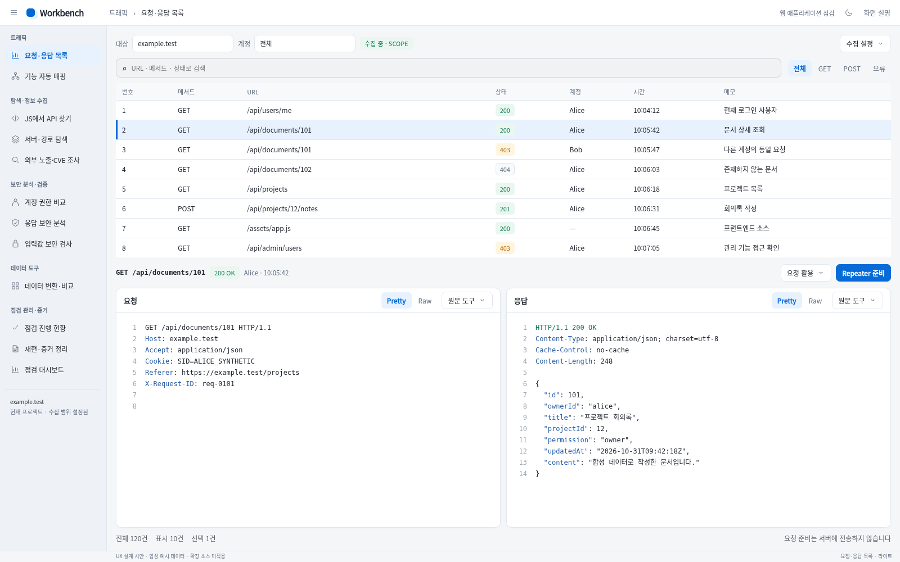
다크
- 찾기 → 원문 확인 → 요청 활용 순서로 묶고, 선택 URL·응답 상태와 도구 연결을 한 문맥줄로 합쳤습니다.
- Repeater를 한 가지 주 동작으로 두고 계정 비교·입력값 검사·증거 연결을 요청 활용 메뉴에 통합했습니다.
- 패킷 검색은 필요할 때 펼쳐 원문 높이를 확보하고 대상·수집 설정은 한 문맥줄로 압축했습니다.
2. 기능 자동 매핑
요청을 기능으로 분류하고 원문과 분류 근거를 확인
라이트 다크
다크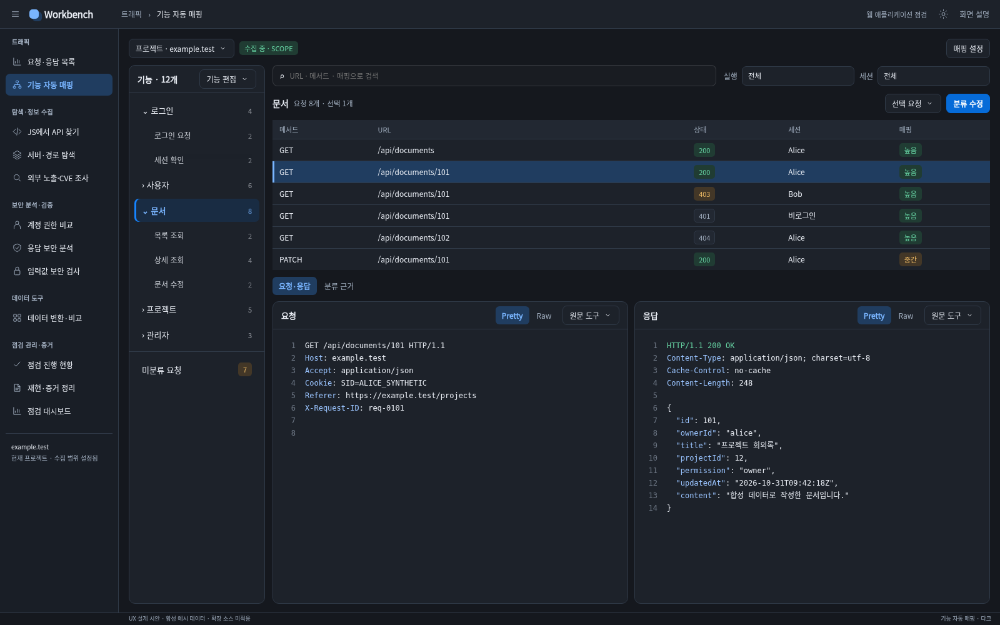
- 프로젝트 관리·기능 편집·요청 분류를 서로 다른 문맥에 배치해 분류 작업의 우선순위를 분명히 했습니다.
- 기능 트리의 편집과 업무 연결을 한 메뉴로 묶고, 선택 요청은 분류 수정 하나를 강조합니다.
- 미분류 개수는 직접 접근하는 필터로 노출하고 반복되는 실행 정보보다 URL·세션·분류 확실성을 앞에 둡니다.
3. JS에서 API 찾기
발견 경로와 호출 코드를 함께 확인한 뒤 검증 요청 준비
라이트 다크
다크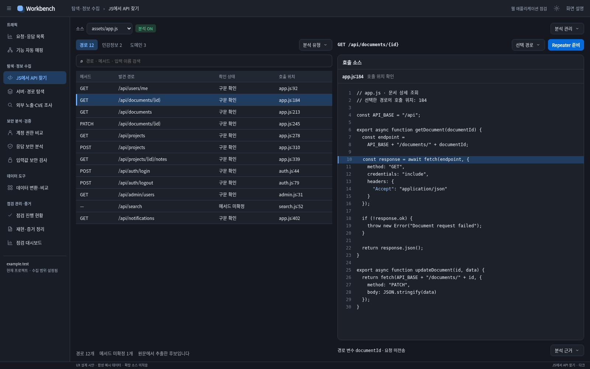
- 경로 목록을 주 작업으로 올리고, 경로와 호출 소스를 나란히 배치해 세 방향으로 흩어진 확인 동선을 줄였습니다.
- 표와 중복되는 URL·메서드 사실표를 줄이고 발견 입력과 분석 근거는 필요한 경우 펼치도록 구성했습니다.
- 분석 유형과 분석 관리 작업을 구분해 묶고 선택 경로의 다음 동작인 Repeater 준비만 강조합니다.
4. 서버·경로 탐색
관측 근거가 있는 경로를 골라 GET 응답을 확인하기
라이트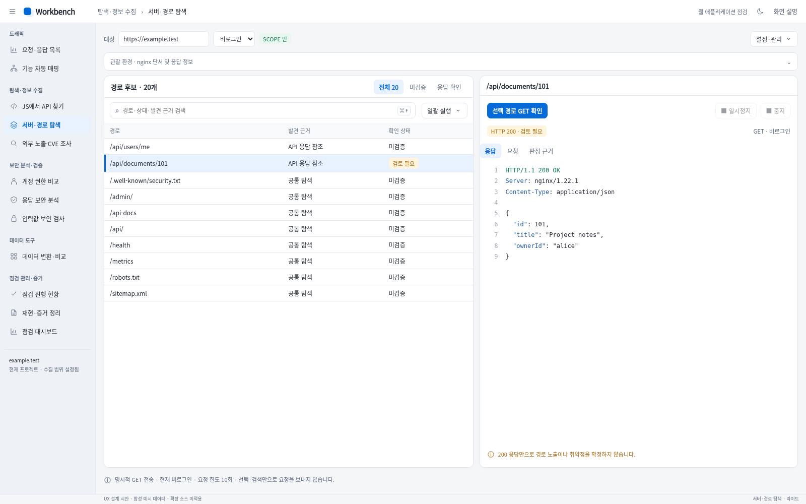
다크
- 선택 확인을 주 동작으로 두고 전체 실행·재개를 실행 메뉴로 묶었습니다.
- 환경 관측·설정·저장 관리를 기본 목록과 분리해 후보 표와 응답 읽기 공간을 확보했습니다.
- 후보 목록과 선택 경로 리더를 나란히 놓아 선택과 검토를 한 흐름으로 연결했습니다.
5. 외부 노출 조사 · 검색 노출
검색식을 열고 가져온 URL을 SCOPE·근거와 함께 검토하기
라이트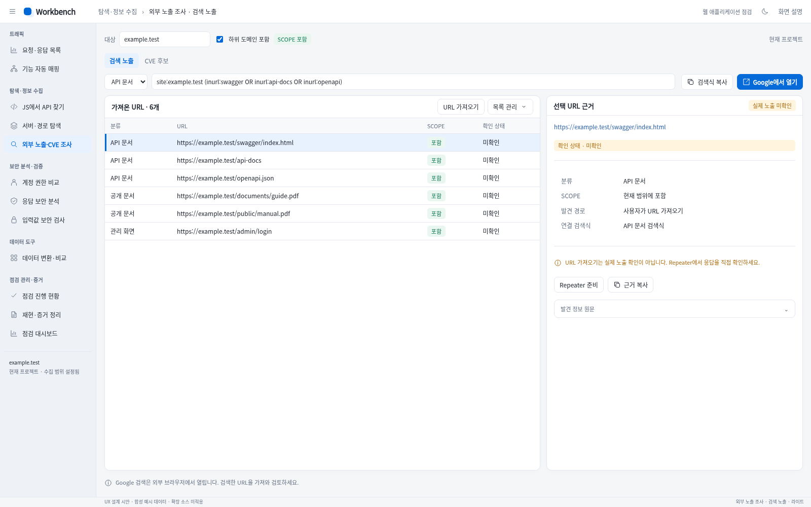
다크
- 분류 선택·검색식·Google 열기를 하나의 검색 작업으로 묶었습니다.
- URL 가져오기·목록 관리와 선택 URL의 Repeater·근거 작업을 구분했습니다.
- 긴 원문 설명을 사실 요약으로 바꿔 목록과 선택 근거를 동시에 읽도록 구성했습니다.
6. 외부 노출 조사 · CVE 후보
관측 제품에 적용될 수 있는 CVE 조건과 출처를 검토하기
라이트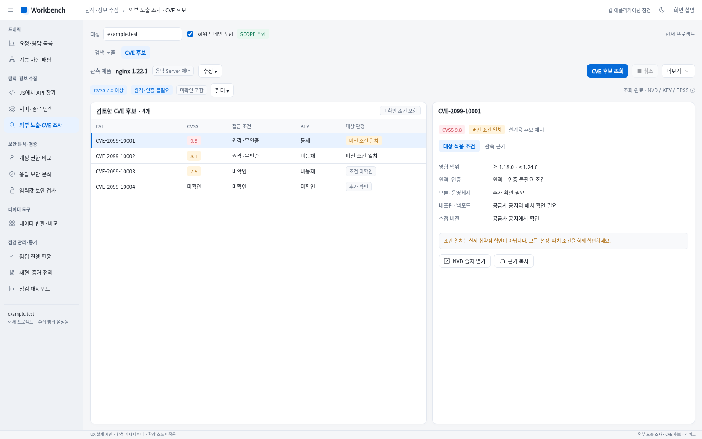
다크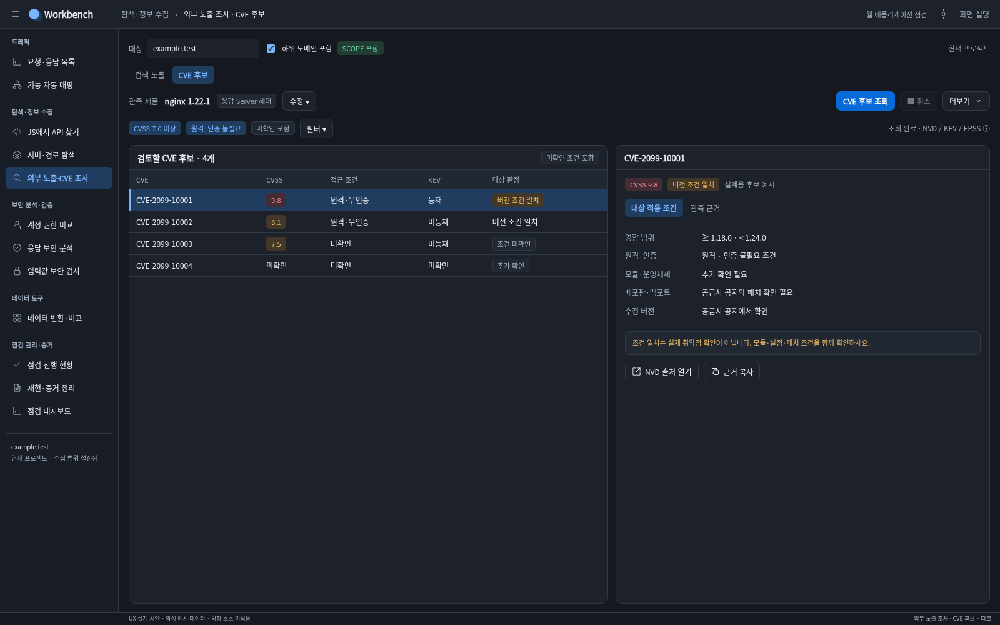
- 관측 제품은 한 곳에서 요약하고 수동 CPE 수정은 접어 반복 입력을 줄였습니다.
- 기본 적용 필터를 짧은 칩으로 보여 주고 세부 필터·캐시는 필요할 때 열도록 정리했습니다.
- 다섯 개 동등한 상세 박스를 적용 조건과 관측 근거의 검토 흐름으로 통합했습니다.
7. 계정 권한 비교
역할별 응답 차이에서 직접 검토할 요청을 찾기
라이트 다크
다크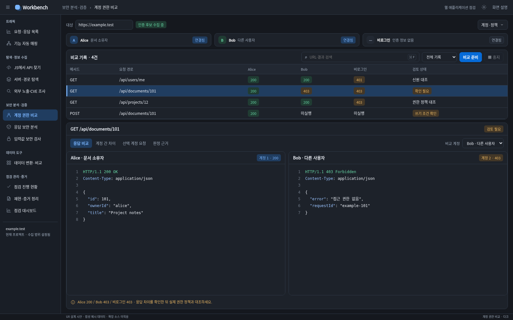
- 큰 계정 카드를 역할·신원·연결 상태가 보이는 한 줄 요약으로 통합했습니다.
- 주 동작을 ‘비교 준비’로 명확히 하고, 계정·세션·정책 보완은 하나의 관리 메뉴에 모았습니다.
- 기록 표와 응답 비교를 연결하고 반복 설명을 줄여 패킷 읽기에 공간을 배분했습니다.
8. 응답 보안 분석
관찰 내용을 응답 원문과 대조하고 검토한 항목을 증거로 정리
라이트 다크
다크
- 관찰 목록과 검사 영역을 나란히 두고 원문을 크게 배분해 목록→근거→원문으로 반복 이동하던 동선을 줄였습니다.
- 분류·위치·URL이 반복되는 사실표를 한 요약줄로 합치고 원문·관련 요청·영향 URL을 같은 영역에서 전환합니다.
- 증거로 정리를 주 동작으로 두고 복사·원본 연결은 관찰 작업에, 초기화·재시도는 분석 관리에 구분했습니다.
9. 입력값 보안 검사 · 요청 준비
검사 위치와 전송 조건을 확인하고 직접 검사 시작하기
라이트 다크
다크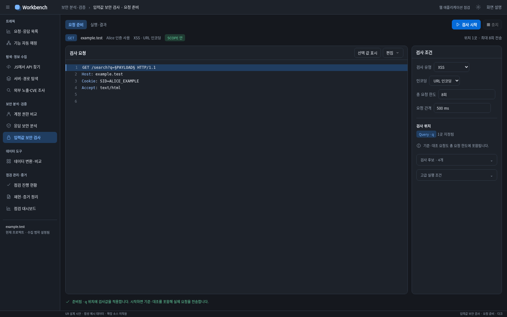
- 요청·검사 후보의 중첩 탭을 없애고 요청 편집 옆에서 핵심 조건을 함께 확인하도록 구성했습니다.
- 시작 전 확인할 대상·인증·위치·요청 한도를 짧은 요약으로 드러냈습니다.
- 초기화·미리보기·세부 옵션은 필요할 때 펼쳐 편집기와 주 실행을 우선했습니다.
10. 데이터 변환·비교
입력에 필요한 변환을 적용하고 원문과 결과를 나란히 대조합니다.
라이트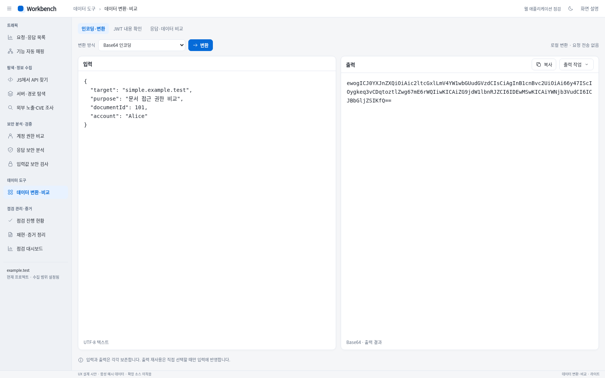
다크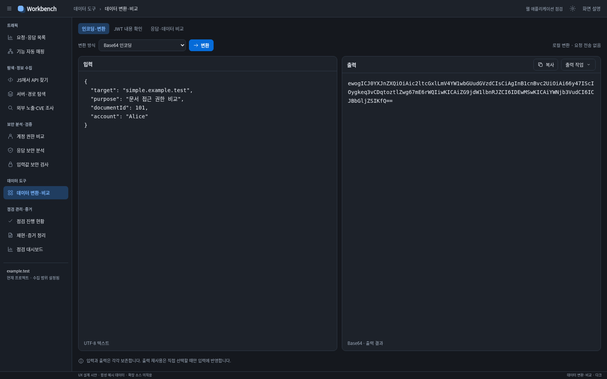
- 변환 방식을 공통 작업줄에서 고르고 실행하게 해 입력과 출력의 관계를 드러냈습니다.
- 복사는 출력 헤더에, 출력 재사용은 출력 작업 메뉴에 묶어 역할을 분리했습니다.
- 모드별로 필요한 기능만 보여 주어 JWT 가져오기와 변환 작업을 섞지 않았습니다.
11. 점검 진행 현황
남은 항목을 찾고 근거를 검토한 뒤 완료 상태를 기록합니다.
라이트 다크
다크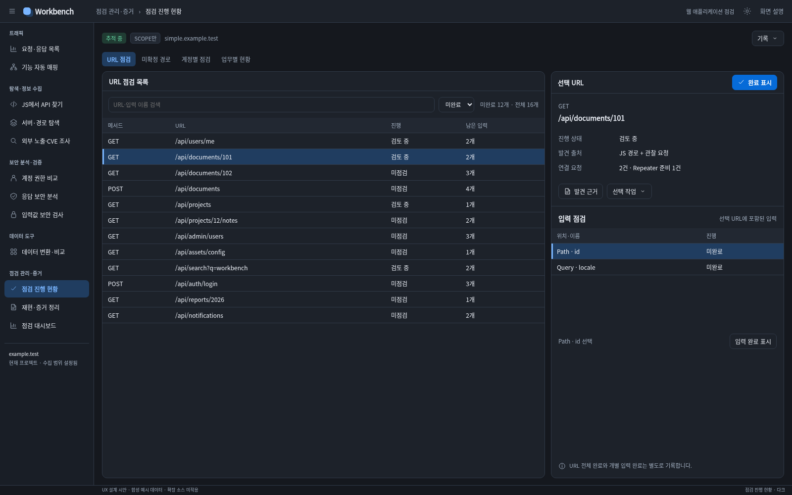
- 목록은 URL·진행 상태·남은 입력에 집중하고 요청 수와 출처는 선택 상세로 모았습니다.
- 근거 확인과 완료 기록을 한 선택 영역으로 묶어 URL 완료·입력 완료의 대상을 분명히 했습니다.
- 가져오기·저장·내보내기를 기록 메뉴로 통합해 상단의 상시 버튼 수를 줄였습니다.
12. 증거 정리
원본 근거를 확인하며 영향과 재현 절차를 작성하고, 가림을 확인해 저장합니다.
라이트 다크
다크
- 문서 저장·미리보기와 증거 항목 편집을 분리해 작업 수준을 구분했습니다.
- 영향·재현 절차를 하나의 작성 흐름으로 묶고 원문을 옆에서 대조하도록 구성했습니다.
- 항목별 순서·삭제·메모를 메뉴로 묶고 실행 취소만 바로 접근하게 해 목록 공간을 확보했습니다.
13. 점검 대시보드
현재 실행의 관측 결과를 좁히고 원본 근거를 검토합니다.
라이트 다크
다크
- 같은 분류 수치를 반복하던 카드와 막대를 한 요약으로 통합했습니다.
- 분포 그래프를 접히는 상세로 돌려 결과 목록과 원문 근거가 기본 화면의 중심이 되게 했습니다.
- 전체 점검률로 오해하지 않도록 전송·예산 정보와 관측 결과를 분리했습니다.
14. 입력값 보안 검사 · 실행·결과
관측한 결과와 실제 요청·응답을 대조해 재현 근거 만들기
라이트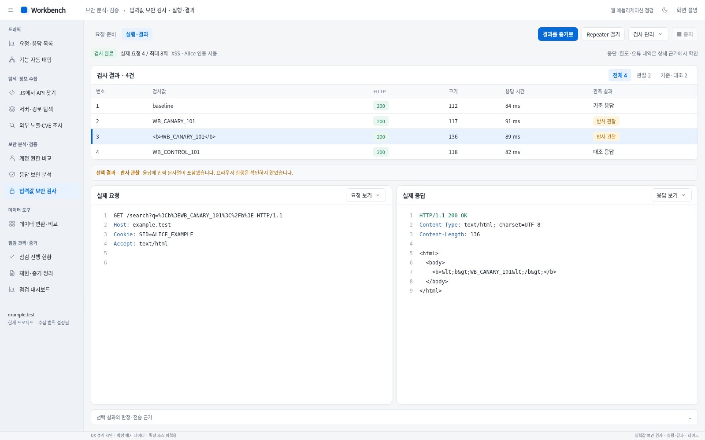
다크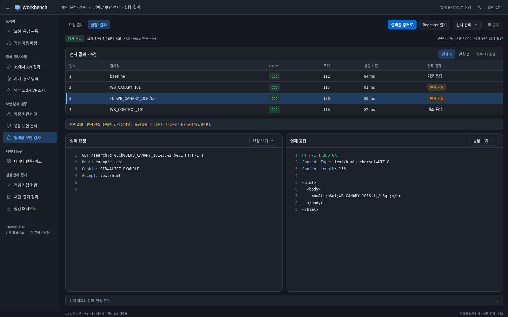
- 결과 활용을 주 동작으로 바꾸고 재검사·CSV는 보조 메뉴로 구분했습니다.
- 큰 판정 사유 박스를 짧은 선택 결과 요약으로 합쳐 요청·응답을 더 넓게 읽게 했습니다.
- 반사 관찰과 브라우저 실행 확인을 구분해 결과를 과장하지 않도록 표시했습니다.
15. 요청 재현
준비한 요청과 실행 조건을 확인하고 순차 실행 결과를 대조합니다.
라이트 다크
다크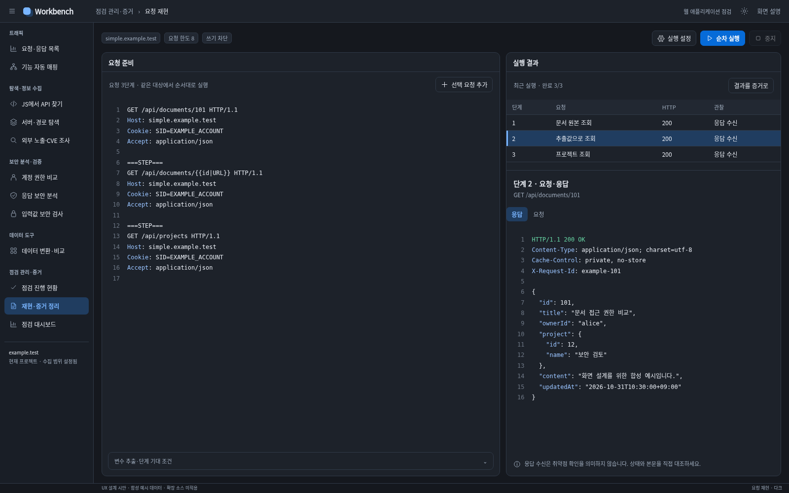
- 실행에 영향을 주는 대상·쓰기 허용·요청 한도를 상단의 짧은 요약으로 드러냈습니다.
- 변수 추출과 기대 조건은 필요할 때 펼치게 해 기본 요청 편집 공간을 넓혔습니다.
- 요청 준비·실행·결과 검토를 분리하고 증거 연결은 결과 문맥에만 두었습니다.
16. 계정 권한 비교 · 인증 후보 연결
같은 대상의 인증 후보를 비교 역할에 연결하기
라이트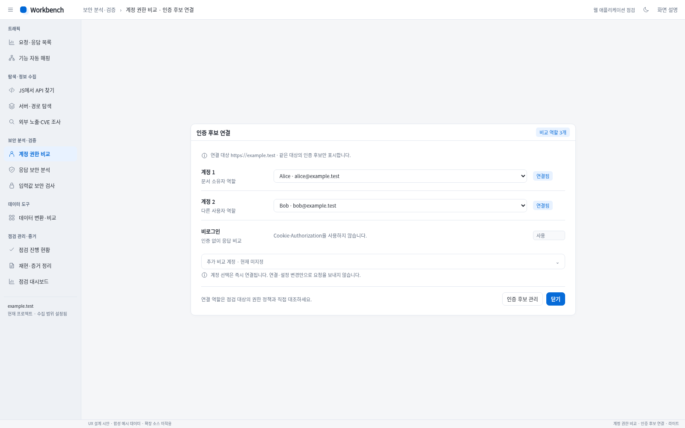
다크
- 대상 Origin을 한 번만 보여 주고 역할별 선택과 연결 상태를 같은 행에 정렬했습니다.
- 미사용 추가 계정은 접어서 기본 비교 역할을 먼저 보이게 했습니다.
- 현재 연결이 즉시 반영되는 동작을 유지하므로 별도의 적용 단계를 만들지 않았습니다.